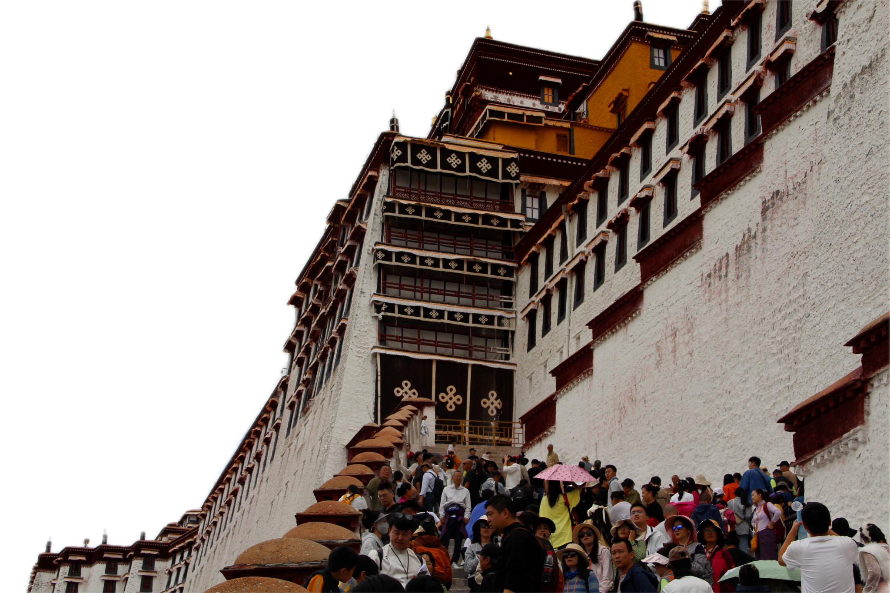

布达拉宫·拉萨
布达拉宫坐落于拉萨红山之上，是西藏极具代表性的宫堡式建筑群，也是藏传佛教的重要文化地标。建筑顺应山势逐层展开，以白宫与红宫形成鲜明的色彩对比，高大的墙体、密集的窗洞和层叠的平台共同构成庄严的轮廓。宫殿、佛殿与院落并非孤立分布，而是通过楼梯和通道相互联系，让行进过程伴随高度与视野的变化。白色墙面与深色窗框突出厚重的体量，金色屋顶则点亮建筑上部的天际线。观察布达拉宫，既能感受山地建筑对地形的回应，也能理解宗教、政治与生活空间如何被整合在庞大的建筑体系之中，形成自然景观与人文历史相互交织的整体。